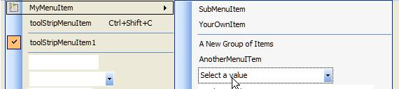

This shows a right click menu created for a graphic form
by a ContextMenuStrip component (containing three main menus, one with
an image, another with a shortcut key and other with a check. The sub
menu shows how a separator line can separate menu items and this sub menu
also allows a user to select a value from a combo box:

Apart from menus and menu items you can also add text boxes, combo boxes
and separator lines to this menu, as follows:
Note: Each item
that you add to the menu is actually a separate control, so that you can
drive or assign their properties via spiders like any other control.
Add this component to the
required graphic form. For details, see Adding menu controls.
Use the on-screen menu
designer to define the required menu system. For details, see Designing menus on-screen.
If you want to add images
for your menu items and/or sub menus, right click each item and select
the Set image... option and browse
in the required image.
Any images that are added are saved as part of the graphic
form and so will be opened in the Operator
If you want certain menu
items to have a check mark, by default, right click each item and select
the Checked option.
Note: If any
item is required to have BOTH an image AND a check mark then you need
click the glyph of this component and check the ShowCheckMargin
checkbox.
If you want to provide
your users with a shortcut key combination that they can use as an alternative
to launching a specific command, then click on the required menu item
and edit its ShortcutKeys property
in the Properties window.
A Tasks menu:
this is displayed by clicking the glyph of this component,
which allows you to specify the docking options for this menu and/or its
painting method and/or to edit its menu items.
RenderMode:
To change the painting style of the menu provided by this component, by
specifying who has the responsibility for rendering (painting) the menu.
ShowImageMargin:
if set to True (the default setting) this provides a column to the right
of each menu item that displays either the image or checked symbol of
the associated menu item.
ShowCheckedMargin:
if set to True (this is False by default) this provides a column to the
right of each menu item that ONLY displays the checked symbol of the associated
menu item.
Note: If both
properties are enabled (set to True) then two separate columns are used
one for the checks and the other for the image to the right of each menu
item.
Edit
Items… : To edit the existing menu items that you have added. For
details, see Editing menus.
On-screen menu
designer:
this is an easy way to create new menus and new menu items to define the
required (hierarchical) menu system.
Important properties:
this describes the important properties used to configure this menu.
GripStyle:
This specifies the ‘drag’ region of the toolbar (you can click and drag
the toolbar from the Grip area – often shown as four vertically aligned
dots on the leftmost side of the toolbar).
Items:
To add and/or edit menu items for this menu system. For details. see Editing menus.
RenderMode:
To change the painting style of the menu provided by this component, by
specifying who has the responsibility for rendering (painting) the menu.
ShowImageMargin:
if set to True (the default setting) this provides a column to the right
of each menu item that displays either the image or checked symbol of
the associated menu item.
ShowCheckedMargin:
if set to True (this is False by default) this provides a column to the
right of each menu item that ONLY displays the checked symbol of the associated
menu item.
Note:
If both properties are enabled (set to True) then two separate columns
are used one for the checks and the other for the image to the right of
each menu item.
ToolStripMenuItem
control:
this lists the important properties of the menu items and sub menus of
this menu, in the case notably their ShortcutKeys
and/or Checked properties.
ToolStripTextBox
control:
either displays a value or allows the user to enter text in an application.
ToolStripComboBox
control:
displays an editing field combined with a ListBox, allowing the user to
select from the list or to enter new text.
Right click
menu:
right click the menu or menu item to display a number of configuration
options.
Common right click menu
options for all controls: these apply to all menu items, sub-menus,
textboxes, comboboxes and separator lines.
Convert
To: If you have mistakenly added the incorrect control, you can
simply convert it to the required control by selecting the required control
from the list displayed by this sub menu instead of removing it and adding
the required control.
Insert:
Insert another menu item, text box, separator line or combo box.
Select:
This can be used to either select the graphic form itself (Form) or this
component.
Cut,
Copy, Paste,
Delete: the selected menu item.
ToolStripMenuItem control-specific
right click menu options: these apply to any selectable menu item
or sub-menu.
Set
Image… : Provide an image for this item.
Enabled:
To enable or disable this item
Checked:
To add a checked symbol for this item
ShowShortcutKeys:
To display the shortcut key combinations configured for this item.
Edit
DropDownItems… : To display the Item Collection Editor to add,
edit or remove sub-menu items.
End-user interaction:
Users right click the form to display the defined menu system:
By hovering over the menu
items, any sub menus are displayed.
Click on the required menu
item.
Alternatively if shortcut
keys are defined the user can specify the required shortcut key sequence
to perform the menu command.
If necessary, users can
view values and/or specify them using the added text and/or combo boxes.

 as follows:
as follows: